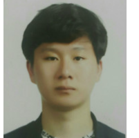
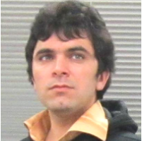

Sangjin Joo has completed his Master's degree in Design Engineering from Graduate School of Creative Design Engineering, UNIST in 2021. He has successfully defended his Master's thesis entitled "The integrated product development process of WAVE.Hat: EEG detecting smart hard-hat for construction site workers". Currently, he is working as an intern in LG Corporation, Changwon City South Korea.
Alumni
Sangjin Joo

Jaehan Park
Jaehan Park has completed his Master's degree in Design Engineering from Graduate School of Creative Design Engineering, UNIST in 2021. He has successfully defended his Master's thesis entitled "The integrated design Process of a Rehabilitation Exercise System: Elbow Joint Rehabilitation Device and Service".

Tufail Muhammad
Tufail has completed his Doctoral degree program in Design Engineering from Graduate School of Creative Design Engineering, UNIST in 2020. He has successfully defended his Doctoral thesis entitled "Design for Assisting Elderly with Poor Motor Control Skills and Managing their Low-Back Pain". Currently, He is working as a Postdoctoral Researcher (URS) in the Department of Design at UNIST.
Jihyeon Yang
Jihyeon Yang has completed her Professional Master's degree program in Design Engineering at Graduate School of Creative Design Engineering, UNIST in 2020. She has successfully defended her Master's thesis entitled "Commercialization of an Academic Outcome: a Case Study of U.CUBE".
Sangjin Park
Mr. Sangjin Park has completed his Professional Master's degree program in Design Engineering at Graduate School of Creative Design Engineering, UNIST in 2019. He has successfully defended his Master's thesis entitled "stool.D Design: Its Usability Test with Pedaling and Aesthetic Design".
Young Chul Chung
Mr. Young Chul Chung has completed his Professional Master's degree program in Design Engineering at Graduate School of Creative Design Engineering at UNIST in 2019. He has successfully defended his Master's thesis entitled "Breath Time: Breathing Exercise Product Through Physical Volumetric Change".
Myungjin Kim
Mr. Myungjin Kim has completed his Professional Master's degree program in Design Engineering at Graduate School of Creative Design Engineering at UNIST in 2018. He has successfully defended his Master's thesis entitled "Development of an exercise device for improving body balance, relieving low back pain, and preventing diseases caused by spinal imbalance". Currently, he is working as a product designer at Hyundai motors in Korea.
Jihyun Lim
Jihyun Lim has completed Master's degree in Design Engineering in Graduate School of Creative Design Engineering at UNIST in 2017. She has successfully defended her Master's thesis entitled "Sticky-up: A paper-based Tabnible Programmable Learning Kit for Child Education." Currently, she is working as a designer in LG Electronics in Seoul South Korea.
Narae Moon
Narae Moon has completed Master's degree in Design Engineering Graduate School of Creative Design Engineering at UNIST in 2017. She has successfully defended her Master's Thesis entitled "SONORE: Design for Improving Maternal Health in Morocco." She is willing to work in a company that design health technology solutions.
YoungJong Seo
YoungJong Seo has completed his Master's degree in Industrial Design from Graduate School of Creative Design Engineering in 2015. He owns a design company in Seoul, South Korea.
EunJin Kim
EungJin Kim has completed her Master's degree in Industrial Design from Department of Industrial Design (Now CDE) in 2014. She has successfully defended her Master's Thesis entitled "Cognitive Styles in the Creative Process - utilization of prior knowledge and experiences." She has started her PhD studies in KAIST, Daejeon, South Korea.
MeeRhee Kim
MeeRhee Kim has completed her Master's degree in Industrial Design from department of Industrial Design (Now CDE) in 2014. She has successfully defended her Master's Thesis entitled "The effect of Educational Background on Designers' Viewpoints." She serves as a designer in Daewoo Electronics, South Korea.
Radjiyev AyubKhon
Radjiyev AyubKhon has completed his Master's degree in Industrial Design from Department of Industrial Design (Now CDE) in 2013. He has successfully defended his Master's Thesis entitled "The Role of Ergonomics in Sustainable Design." He serves as a Lecturer in Department of Computer Graphics and Design at TUIT, Uzbekistan.